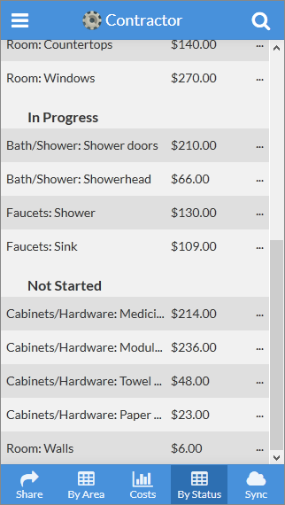
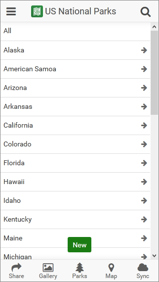
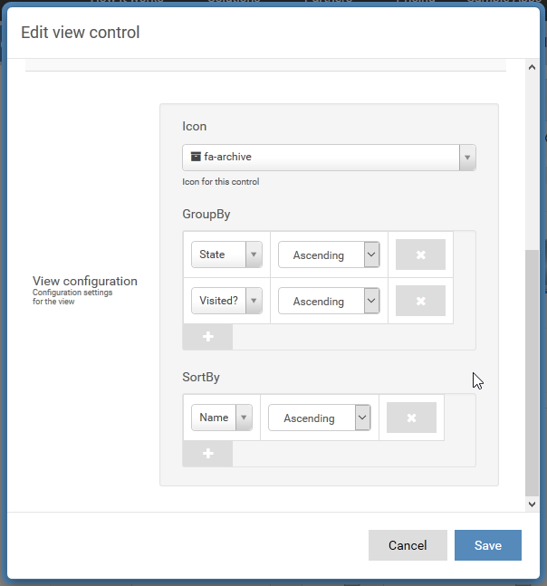

AppSheet offers a number of ways to view your data. References are great when you have data across tables. Spreadsheets with hundreds of rows present a different problem. Large data-sets need to be sorted and grouped to be useful.
In addition to adding group headers, AppSheet can also show a "drilldown" view where data can be filtered to a single column value.
Grouping headers

Drilldown view

These views can be created in the Advanced Editor>UX>Views by editing a view control and setting the GroupBy. You can group by as many columns as you would like by pressing the + button. To remove grouping columns you can press the X button.
If you just have one grouping column the app will show that view with group headers like the Contractor image above. Adding more columns will add drilldown views.

Note: If you don't want to have grouping headers on the final level of grouping you can add a GroupBy entry that groups on the _RowNumber column.